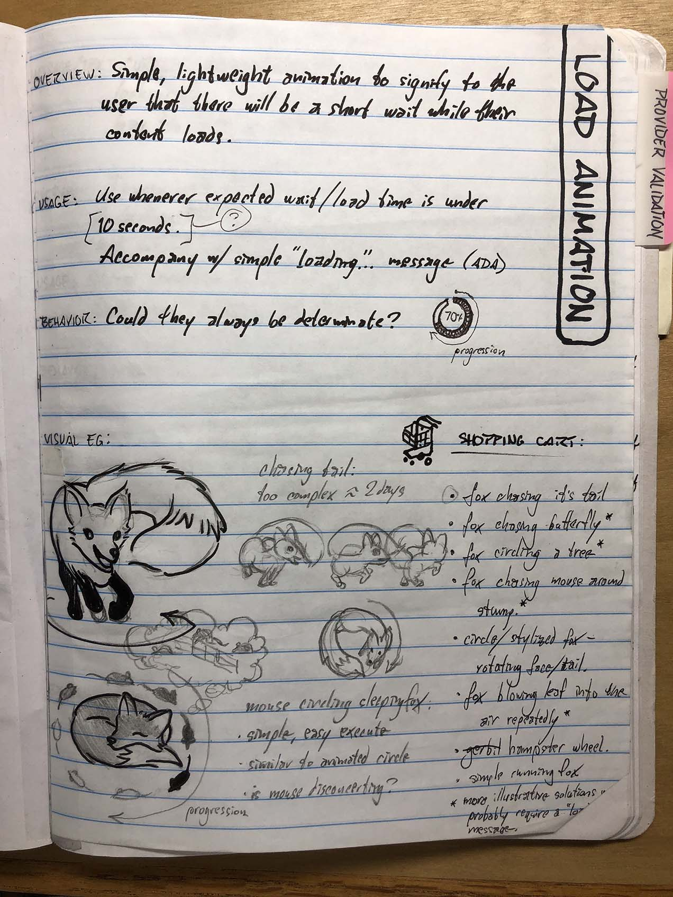
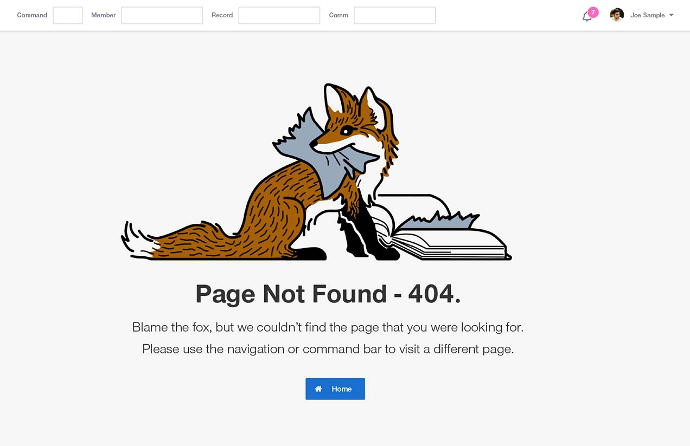

visual design, interaction
One of my fist assignments for the FOX Claims Processing System was to design page load treatments. While determinate and indeterminate loading bars were initially designed alongside the page load spinner, most use was eventually consolidated under the spinner treatment.
This was a simple project with high visibility. Due to some ambitious consolidation of data, users would see a lot of it, for better or worse. I viewed it as a prominent detail. A custom load icon would be fun to design, lightweight and low dev effort.
Sketchbook Page - Plenty of animated images came to mind, but the circular spinner variations built on a widely recognizable pattern.
The old processing system had been in use for nearly 30 years and we knew many users would be resistant to change. I saw this as a chance to bestow the new system with a little personality. Considering the name – FOX Claims – the fuzzy red mammal was the obvious face of the system.
Emotionally, load indicators appear at pivotal moments. No one wants to see a loading icon; it’s a negative indicator by nature. I took the opportunity to offer users a playful image, one that would hopefully head off frustration for a few seconds.
System slowdowns may be inevitable, but they don’t need to be stale.
Finished Animation - The cleaned up SVG image was animated by rotating once per second and displays at a higher Z-index than page content to guarantee visibility.
Seasonal Variations - The FOX loading spinner design inspired a few other expressions of personality in the system. Most notably, a custom 404 page and seasonally-changing home page illustrations that greet users upon login.